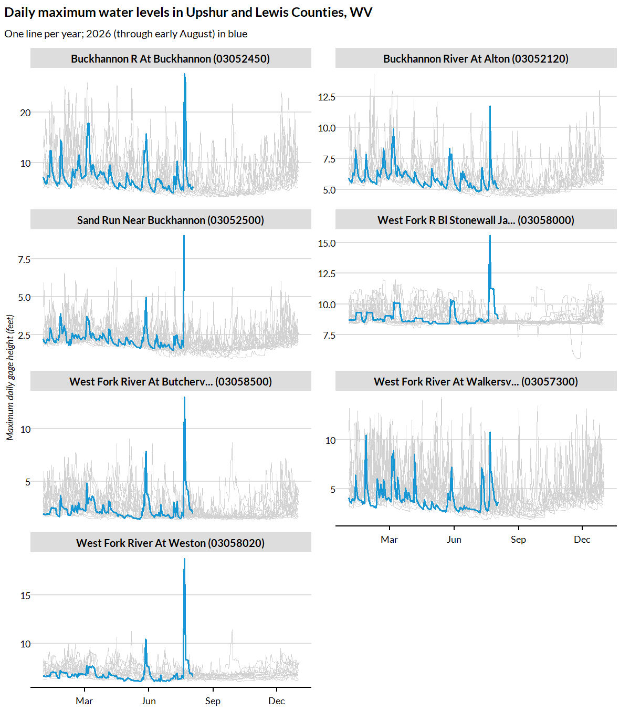

USGS Stream-Gage Histories
get_usgs_gage.Rmdget_usgs_gage() pulls daily stream-gage readings for
every USGS stream gage in one or more counties, attaching each gage’s
name, county, coordinates, and drainage area to every reading. Under the
hood it uses the USGS Water Data APIs via the dataRetrieval
package. Here we ask a concrete question: at the stream gages in Upshur
and Lewis Counties, West Virginia, how do daily maximum water levels in
2026 compare against each gage’s own history?
library(climateapi)
library(dplyr)
library(ggplot2)
library(lubridate)
library(stringr)
library(urbnthemes)
set_urbn_defaults(style = "print")Pulling daily maximum gage heights
Counties are identified by their five-digit FIPS codes: “54097” is Upshur County and “54041” is Lewis County. The daily maximum height is computed from each gage’s continuous (15-minute) record – a download of a minute or more per gage – so each gage’s aggregated daily maxima are cached to their own parquet file: an interrupted pull resumes where it left off, and a re-run reads entirely from disk. We cache under the standard per-user cache directory; any persistent directory works.
gage_history = get_usgs_gage(
counties = c("54097", "54041"),
measure = "height",
statistic = "daily_max",
cache_dir = tools::R_user_dir("climateapi", which = "cache"))
gage_history %>% dplyr::glimpse()
#> Rows: 41,572
#> Columns: 11
#> $ site_number <chr> "03052120", "03052120", "03052120", "03052120", "03…
#> $ gage_name <chr> "BUCKHANNON RIVER AT ALTON, WV", "BUCKHANNON RIVER …
#> $ county_geoid <chr> "54097", "54097", "54097", "54097", "54097", "54097…
#> $ county_name <chr> "Upshur", "Upshur", "Upshur", "Upshur", "Upshur", "…
#> $ state_abbreviation <chr> "WV", "WV", "WV", "WV", "WV", "WV", "WV", "WV", "WV…
#> $ latitude <dbl> 38.81964, 38.81964, 38.81964, 38.81964, 38.81964, 3…
#> $ longitude <dbl> -80.21389, -80.21389, -80.21389, -80.21389, -80.213…
#> $ drainage_area_sqmi <dbl> 94.7, 94.7, 94.7, 94.7, 94.7, 94.7, 94.7, 94.7, 94.…
#> $ date <date> 2011-10-12, 2011-10-13, 2011-10-14, 2011-10-15, 20…
#> $ value <dbl> 5.64, 5.66, 7.89, 7.52, 6.65, 6.22, 5.95, 5.77, 5.8…
#> $ approval_status <chr> "approved", "approved", "approved", "approved", "ap…How does 2026 compare to each gage’s history?
We overlay one line per year at each gage, aligning every year on a shared January-through-December axis. The 2026 line (partial, through early August) is drawn in the Urban Institute’s main blue over each gage’s earlier years in light gray.
plot_data = gage_history %>%
dplyr::mutate(
year = lubridate::year(date),
## a common x-axis date so that years plot atop one another; the (arbitrary)
## year 2026 is used only for axis labeling
common_date = as.Date(lubridate::yday(date) - 1, origin = "2026-01-01"),
## shorten station names so facet labels fit their strips
gage_label = gage_name %>%
stringr::str_to_title() %>%
stringr::str_remove(",?\\s*(Wv|WV)$") %>%
stringr::str_trunc(30) %>%
stringr::str_c(" (", site_number, ")"))
plot_data %>%
ggplot(aes(x = common_date, y = value, group = year)) +
geom_line(
data = ~ dplyr::filter(.x, year != 2026),
color = palette_urbn_gray[5],
linewidth = 0.3) +
geom_line(
data = ~ dplyr::filter(.x, year == 2026),
color = palette_urbn_main[["cyan"]],
linewidth = 0.7) +
facet_wrap(~ gage_label, ncol = 2, scales = "free_y") +
scale_x_date(date_breaks = "3 months", date_labels = "%b") +
labs(
x = NULL,
y = "Maximum daily gage height (feet)",
title = "Daily maximum water levels in Upshur and Lewis Counties, WV",
subtitle = "One line per year; 2026 (through early August) in blue")
Because each series reflects the maximum reading on each day, short-lived flood crests are visible even when they lasted only hours. Note that the vertical axis varies by gage: gage height is measured relative to a gage-specific datum, so heights are comparable across years at the same gage but not across gages.